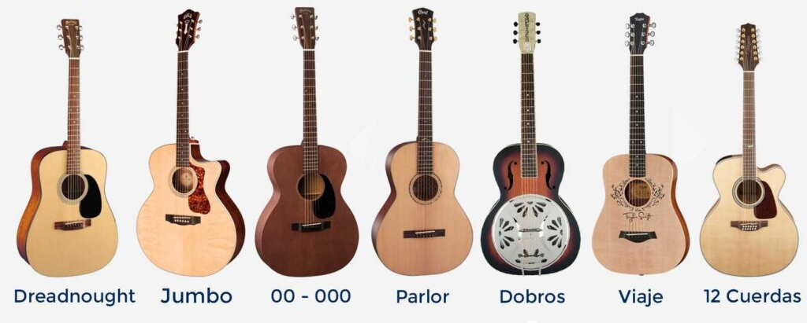

Guitarra Acustica
la guitarra acustica es un instrumento musical de cuerdas que se toca con los dedos o con una pua. tiene un cuerpo hueco que amplifica el sonido de las cuerdas al ser pulsadas.
la guitarra acustica es un instrumento musical de cuerdas que se toca con los dedos o con una pua. tiene un cuerpo hueco que amplifica el sonido de las cuerdas al ser pulsadas.
la guitarra electrica es un instrumento musical de cuerdas que utiliza pastillas para convertir la vibracion de las cuerdas en señales electricas, que luego son amplificadas y modificadas por efectos.